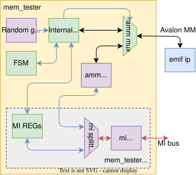

DDR4 Memory Tester¶
MEM_TESTER is used to test external DDR memory to detect failures and overal performance of the memory.
Key features¶
Memory interface is compatible with AMM (Avalon-Memory-Mapped) interface and Intel EMIF Hard IP
Basic test workflow:
Sequential write of the pseudo random data to every memory address
Resting pseudo random generator (to generate the exactly same sequence)
Sequentially sending read requests to all memory address space and comparing received data with pseudo random generator output
Additionally random address generation can be enabled to measure more realistic memory performance
However in this mode error counter will detect errors due to the overlap of some addresses
Therefore random addressing mode should be used only for measuring and not for testing
Some other test parameters can be set:
Incremental read (next read request will be send only after the result of previous read is received)
This mode is better for measuring latencies, because memory is not loaded with other requests
Auto precharge for random addressing
Manual control over refresh period
Test configuration can be set via MI interface
There is also python script for generating PDF report with different modes
Measuring is handled by MEM_LOGGER
MEM_TESTERmust be placed to the external memory drivers clock domainFor MI bus there is internal MI_ASYNC component for bridging different clock domains
You can even manually read adn write to the external memory using AMM_GEN component
Component port and generics description¶
- ENTITY MEM_TESTER IS¶
- GenericsPorts
Generic
Type
Default
Description
AMM_DATA_WIDTH
integer
512
Avalon Memory-Mapped (memory interface) data width
AMM_ADDR_WIDTH
integer
26
AMM_BURST_COUNT_WIDTH
integer
7
AMM_FREQ_KHZ
integer
266660
Avalon Memory-Mapped (memory interface) frequency in kHz
MI_DATA_WIDTH
integer
32
MI bus data width
MI_ADDR_WIDTH
integer
32
RAND_GEN_DATA_WIDTH
integer
64
Random data generators width Random data will be made by adding these generators in series For alowed values se LFSR_SIMPLE_RANDOM_GEN (4, 8, 16, 20, 24, 26, 32, 64)
RAND_GEN_ADDR_WIDTH
integer
26
Width of random generator for addresses (should be equal or larger then AMM_ADDR width)
RANDOM_DATA_SEED
slv_array_t(0 to AMM_DATA_WIDTH / RAND_GEN_DATA_WIDTH - 1)(RAND_GEN_DATA_WIDTH - 1 downto 0)
UNDEFINED
Random data generator seed
= UNDEFINED
UNDEFINED
RANDOM_ADDR_SEED
std_logic_vector(RAND_GEN_ADDR_WIDTH - 1 downto 0)
resize(X”3FBF807”, RAND_GEN_ADDR_WIDTH)
REFR_REQ_BEFORE_TEST
boolean
false
Manual refresh enable
REFR_PERIOD_WIDTH
integer
MI_DATA_WIDTH
DEF_REFR_PERIOD
std_logic_vector(REFR_PERIOD_WIDTH - 1 downto 0)
(others => ‘0’)
AMM_PROBE_EN
boolean
false
Enable AMM probe for measurement (depreciated)
HISTOGRAM_BOXES
integer
256
Latency histogram precision for AMM probe (depreciated)
DEFAULT_BURST_CNT
integer
4
Default memory burst count
DEFAULT_ADDR_LIMIT
integer
2**AMM_ADDR_WIDTH - 2 ** AMM_BURST_COUNT_WIDTH
Until which address should be test done (to reduce simulation resources) Shoud be power of 2
DEBUG_RAND_ADDR
boolean
false
Force random address generator to generate in range 0 to DEFAULT_ADDR_LIMIT (for simulation)
DEVICE
string
UNDEFINED
Port
Type
Mode
Description
=====
Avalon interface from EMIF IP
=====
=====
AMM_CLK
std_logic
in
AMM_RST
std_logic
in
AMM_READY
std_logic
in
Indicates when controller is ready
AMM_READ
std_logic
out
When asserted, transaction to current address with current burst count is generated
AMM_WRITE
std_logic
out
Has to be high for every word in transaction
AMM_ADDRESS
std_logic_vector(AMM_ADDR_WIDTH - 1 downto 0)
out
Indexed by AMM words (can be set just for the first word of each transaction)
AMM_READ_DATA
std_logic_vector(AMM_DATA_WIDTH - 1 downto 0)
in
AMM_WRITE_DATA
std_logic_vector(AMM_DATA_WIDTH - 1 downto 0)
out
AMM_BURST_COUNT
std_logic_vector(AMM_BURST_COUNT_WIDTH - 1 downto 0)
out
Number of AMM words in one r/w transaction
AMM_READ_DATA_VALID
std_logic
in
REFR_PERIOD
std_logic_vector(REFR_PERIOD_WIDTH - 1 downto 0)
out
Manual memory refresh period
REFR_REQ
std_logic
out
REFR_ACK
std_logic
in
=====
Other EMIF IP signals
=====
=====
EMIF_RST_REQ
std_logic
out
Force reset and calibration, must be at least 2 clk at ‘1’
EMIF_RST_DONE
std_logic
in
EMIF_ECC_ISR
std_logic
in
Interrupt to indicate whenever bit error occurred
EMIF_CAL_SUCCESS
std_logic
in
Calibration successful
EMIF_CAL_FAIL
std_logic
in
Calibration failed
EMIF_AUTO_PRECHARGE
std_logic
out
Auto precharge request
=====
MI bus interface
=====
=====
MI_CLK
std_logic
in
MI_RST
std_logic
in
MI_DWR
std_logic_vector(MI_DATA_WIDTH - 1 downto 0)
in
MI_ADDR
std_logic_vector(MI_ADDR_WIDTH - 1 downto 0)
in
MI_BE
std_logic_vector(MI_DATA_WIDTH / 8 - 1 downto 0)
in
MI_RD
std_logic
in
MI_WR
std_logic
in
MI_ARDY
std_logic
out
MI_DRD
std_logic_vector(MI_DATA_WIDTH - 1 downto 0)
out
MI_DRDY
std_logic
out
Control SW¶
Because the measurement is handled by MEM_LOGGER (DATA_LOGGER wrap) you need to install its package:
You also need to install python nfb package
cd ofm/comp/debug/data_logger/sw
python3 setup.py install --user
Then you can control MEM_TESTER using mem_tester.py script:
With no arguments the script will run basic memory test and print result
-p argument can be used to print MEM_TESTER state
-r argument can be used to run test with random addressing
If you have your card at different device than /dev/nfb0 you can use -d argument
If you have multiple MEM_TESTER you can select concrete instance by -i argument
This will also set the same index for MEM_LOGGER component
You can even manualy write and read to the external memory using –gen-* arguments
Warning
Test with random indexing active will generate a few errors, due to multiple writes to the same address. Its used just for measurement purpose.
$ python3 sw/mem_tester.py -h
usage: mem_tester.py [-h] [-d device] [-c compatible] [-C compatible]
[-i index] [-I index] [-p] [--rst] [--rst-tester]
[--rst-logger] [--rst-emif] [-r] [-b BURST] [-s SCALE]
[-o] [-f] [--auto-precharge] [--refresh REFRESH]
[--set-buff burst data] [--get-buff] [--gen-wr addr]
[--gen-rd addr] [--gen-burst GEN_BURST]
mem_tester control script
optional arguments:
-h, --help show this help message and exit
card access arguments:
-d device, --device device
device with target FPGA card.
-c compatible, --comp compatible
mem_tester compatible inside DevTree.
-C compatible, --logger-comp compatible
mem_logger compatible inside DevTree.
-i index, --index index
mem_tester index inside DevTree.
-I index, --logger-index index
mem_logger index inside DevTree.
common arguments:
-p, --print print registers
--rst reset mem_tester and mem_logger
--rst-tester reset mem_tester
--rst-logger reset mem_logger
--rst-emif reset memory driver
test related arguments:
-r, --rand use random indexing during test
-b BURST, --burst BURST
burst count during test
-s SCALE, --scale SCALE
tested address space (1.0 = whole)
-o, --one-simult use only one simultaneous read during test
-f, --to-first measure latency to the first received word
--auto-precharge use auto precharge during test
--refresh REFRESH set refresh period in ticks
amm_gen control arguments:
--set-buff burst data
set specific burst data in amm_gen buffer
--get-buff print amm_gen buffer
--gen-wr addr writes amm_gen buffer to specific address
--gen-rd addr reads memory data to amm_gen buffer
--gen-burst GEN_BURST
sets burst count for amm_gen
Example output:
$ python3 sw/mem_tester.py
|| ------------------- ||
|| TEST WAS SUCCESSFUL ||
|| ------------------- ||
Mem_logger statistics:
----------------------
write requests 16777215
write words 67108860
read requests 16777215
requested words 67108860
received words 67108860
Flow:
write 137.03 [Gb/s]
read 24.66 [Gb/s]
total 41.80 [Gb/s]
Time:
write 250.75 [ms]
read 1393.22 [ms]
total 1643.97 [ms]
Latency:
min 75.00 [ns]
max 630.00 [ns]
avg 80.04 [ns]
histogram [ns]:
...
69.0 - 75.0 ... 16165552
...
87.0 - 93.0 ... 62962
93.0 - 99.0 ... 241581
...
111.0 - 117.0 ... 128501
...
147.0 - 153.0 ... 1
...
435.0 - 441.0 ... 50118
...
453.0 - 459.0 ... 2
459.0 - 465.0 ... 1
...
471.0 - 477.0 ... 2570
...
483.0 - 489.0 ... 1
489.0 - 495.0 ... 62961
495.0 - 501.0 ... 62962
...
573.0 - 579.0 ... 1
...
627.0 - 633.0 ... 2
Errors:
zero burst count 0
simultaneous r+w 0
Pytest SW¶
You can also use automated testing using pytest framework:
This script will try to find MEM_TESTER and MEM_LOGGER components
Will try to open then and read their configuration and status
Will run sequential tests on each detected memory interface (with minimal and maximal burst counts)
python3 -m pytest -xs --tb=short test_mem_tester.py
# -s ... to show measured data
# -x ... end after first failure
# -tb ... show only assertion message
If you need to use different device, edit device variable in test_mem_tester.py
PDF report generator SW¶
Additionally you can run report_gen.py script that will run MEM_TESTER with different configurations and will generate PDF or Markdown report with measured graphs.
The report will contain basic configuration of the MEM_TESTER and MEM_LOGGER.
Result of the full memory test on each interface including table with measured latencies, data flow, …
Number of tests on the smaller memory address space that will try different burst counts (data lengths)
In order to generate PDF report you need to install pandoc and texlive or other LATEX engine:
If you don’t need PDF report you can run report_gen.py with md argument (only Markdown and graphs will be generated)
sudo yum install pandoc
sudo yum install texlive-latex
sudo yum install texlive
Then you can generate PDF or (only Markdown) report using:
python3 report_gen.py
python3 report_gen.py md
This script will generate following files:
Markdown and PDF report:
mem_tester_report.md,mem_tester_report.pdfGraphs in
fig/*folderRaw JSON data in
data.jsonfile
Internal Architecture¶
Architecture description:
MI bus logic is separated into another file (
mem_tester_mi.vhd)MI_ASYNC is used to cross between MI bus and Avalon clock domains
MI_SPLITTER_PLUS_GEN divides MI bus for mem_tester and AMM_GEN components
AMM_GEN can be used to manually access the external memory
LFSR_SIMPLE_RANDOM_GENcomponents generate random data and addresses for testing external memoryAMM_MUXis used to select between these AMM interfaces:Internal logic during memory test
AMM_GEN during the manual access
The whole component is then controlled by FSM
{kind=link}

MI Bus Control¶
MI Address Space Definition
0x0000 -- ctrl in
1. bit -- reset
2. bit -- reset EMIF IP
3. bit -- run test
4. bit -- AMM_GEN enable (connects AMM_GEN to AMM bus)
5. bit -- random addressing enable
6. bit -- max. one simultaneous read transaction (for measuring latency)
7. bit -- auto precharge request to EMIF (if connected)
0x0004 -- ctrl out
1. bit -- test done
2. bit -- test successful
3. bit -- ECC error occurred
4. bit -- calibration success
5. bit -- calibration fail
6. bit -- AMM_READY
0x0008 -- err cnt
0x000C -- burst cnt during test
0x0010 -- limit address during test
0x0014 -- refresh period
0x0018 -- default refresh period
0x0040 -- AMM_GEN base address
Following bits inside ctrl in register reacts only for rising edge:
resetbitreset EMIF IPbitrun testbit
Usage
Reset sequence:
Set
resetbit to1and then to0To reset EMIF IP set
reset EMIF IPbit to1and then to0and wait for eithercalibration successfulbit orcalibration failbit
Run test:
To run the test set
run testbit to1After the test is finished
test donebit will be set to1and the result will be available intest successfulbitError count during test will be available inside err cnt register